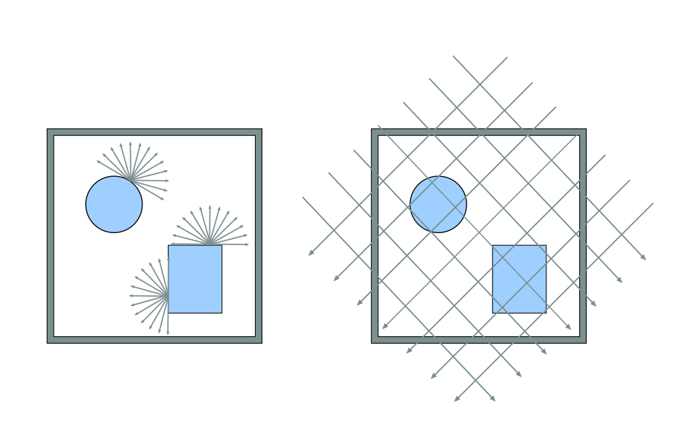
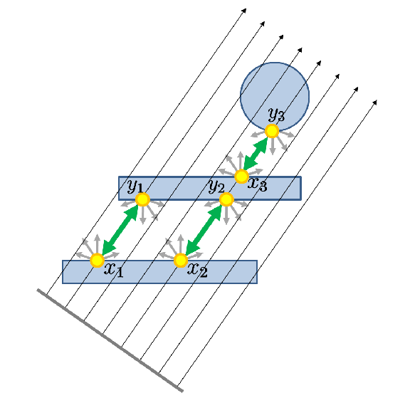
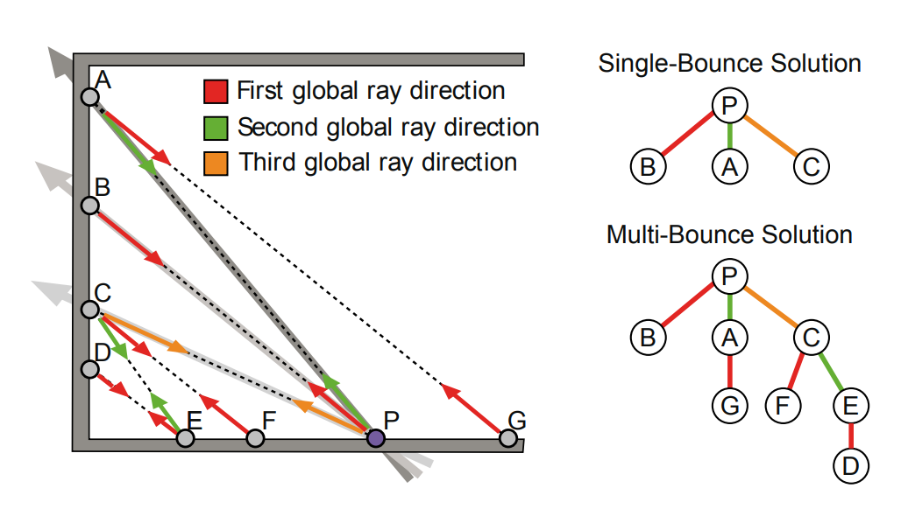
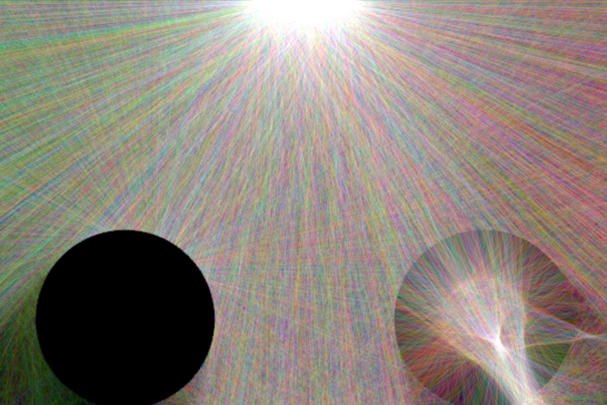
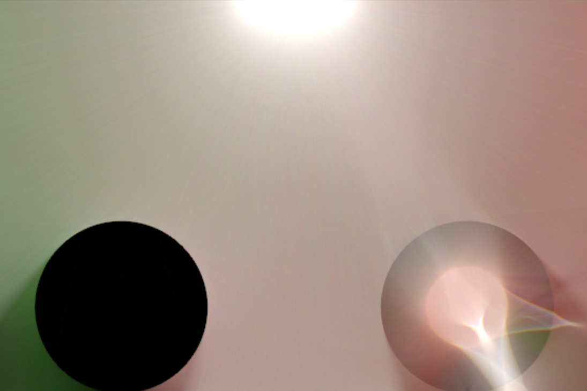
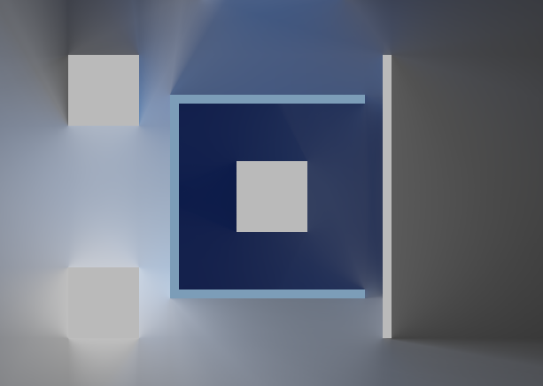
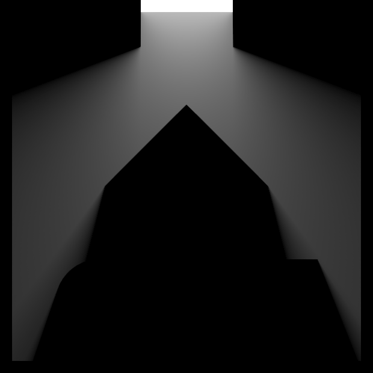
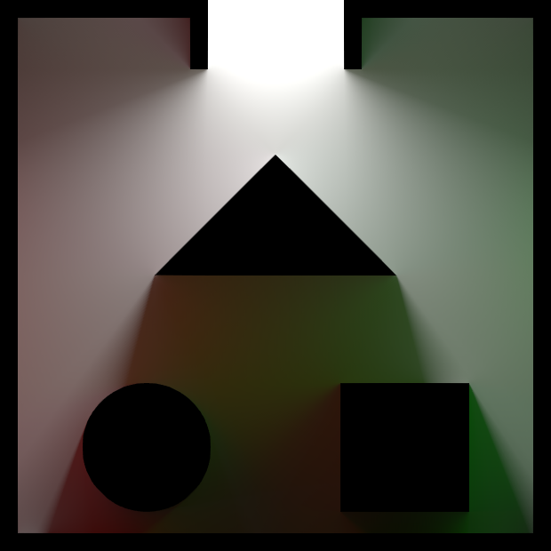
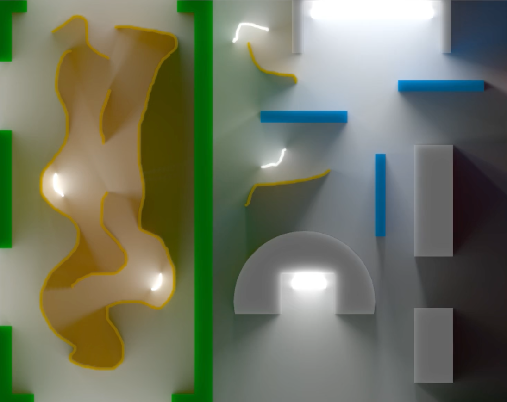

Summary and Team Members
For this project, we hope to implement an interactive 2D raytracer. We will start out by implementing a Monte Carlo raytracer similar to the one in Assignment 3 - with the ability to run in real-time. However, it would run at low-fidelity during scene changes. Our more ambitious goal is to create a parallel raytracer, which would hopefully run fast enough to render high-fidelity dynamic scenes.
Joseph Moon: 3033156362
Abdulrahman AlZenki: 25740621
Lawrence Elkins: 23452545
Problem Description
Raytracing is a powerful method to generate realistic lighting effects, such as global illumination and soft shadows. It works by shooting rays into each screen pixel from the camera and approximating a solution to the rendering equation along each ray's intersections with the scene. Raytracing in real-time is an ongoing area of research, due to the algorithm's steep computational cost. We plan to mitigate this cost in several ways:
- Run the renderer in 2D space instead of 3D space to decrease complexity.
- When the camera or scene changes, we need to re-render the entire scene. To maintain real-time performance, we might render frames with just a few samples and gradually add new ones if the scene and camera stay still (i.e. lo-fi dynamic scenes).
- More ambitiously, we want to run raytracing on the GPU with a parallel ray-bundling algorithm to create hi-fi dynamic scenes.
Parallel Raytracing
Also known as parallel ray-bundling or global line radiosity, this algorithm enables parallelization of raycasting on the GPU. Instead of raytracing over each pixel sequentially, we sample every pixel with parallel rays in some random direction. We gather every fragment along each ray and propagate light along those in direct line-of-sight. Sampling many times, with many random angles, yields the equivalent result to traditional raytracing (Hachisuka 2005). By essentially rasterizing the scene at different angles, we can take advantage of the GPU to run billions of raytraces per second.
|

Instead of raycasting randomly from different positions, we use bundles of parallel rays.
|

Radiance is passed between intersection points.
|

Similar to traditional raytracing, we can calculate bounces recursively.
|
Goals and Deliverables
We plan to measure performance by the number of raycasts (i.e. samples) per second. This is simply (frames per second * pixels per frame * raycasts per pixel). Time permitting, we will compare raycasting with and without parallelization. We also hope to create a clean and intuitive web interface to run each algorithm. Our final deliverable will be a webpage containing an embedded three.js application.
Plan to deliver:
- Render simple 2D scenes in real-time (limited number of lights and objects with diffuse surfaces).
- Animate and have the ability to interact, to show that our renderer is in real-time.
- Implement the rendering equations from class in 2D. If we can't make it work, then we will just deposit light along rays and adjust gamma (like in this resource).
|

How line-deposition looks when changing the scene
|

After staying still for several seconds
|
- In real-time, add additional samples to a frame if the scene hasn't changed. This means that the quality of the real-time render might start out a bit noisy when things are first moved.
Hope to deliver:
- Use the parallel ray-bundling algorithm to achieve high sample count in real-time. If not, then implement specular surfaces, caustics, and other lighting effects in 2D.
- Examples of parallel ray-bundling:
|

Still from video of real-time implementation.
|
|

Only direct lighting
|

Add indirect lighting
|
|

With sub-surface scattering
|
- Novelty: whereas these examples used direct OpenGL calls, we plan to implement our version using shaders in WebGL. Furthermore, no one has formally published material regarding the 2D implementation, which unlike the 3D version is uniquely suited to real-time application.
Schedule
Week 1 (April 2 - 8):
- Set up framework to work on project.
- Begin attempt to implement parallel ray-bundling.
Week 2 (April 9 - 15):
- If parallel ray-bundling is feasible, try to finish static implementation and begin working on animating simple scenes. Also investigate
methods of speeding up the algorithms and making the renders more impressive with details like simple particle effects.
- Otherwise, begin working on real-time Monte Carlo raytracer and investigate methods of speeding up the algorithm or approximating parts of it (to deal with the inevitable noise that will be produced).
Week 3 (April 16 - 22):
- Finalize (hopefully) both implementations of real-time 2D global illumination so that speed and image quality can be compared between
the two methods.
- Write milestone report and slides. Also create milestone video that will include several simple scenes to display the methods in action.
Week 4 (April 23 - 29):
- Polish the project, adding in any final speed-ups or details that can enhance image quality.
- Work on presentation slides and script. Brainstorm ideas to extend the project or potential issues that would arise in certain configurations
- Develop several slightly more complicated scenes that can display the power (and possibly the limitations) of our implementation.
- Begin work on final report, to be finalized early in the following week.
Resources
- J. Hermes, N. Henrich, T. Grosch, and S. Mueller, "Global Illumination using Parallel Global Ray-Bundles," Vision, Modeling, and Visualization, 2010.
- J. Mortensen, P. Khanna, and M. Slater, "Light Field Propagation and Rendering on the GPU," The Association for Computing Machinery, 2007.
- T. Hachisuka, "High-Quality Global Illumination Rendering Using Rasterization," in GPU Gems 2, Matt Pharr, Ed., 2005.
- Y. Tokuyoshi, T. Sekine, and S. Ogaki, "Fast Global Illumination Baking via Ray-Bundles," THe Association for Computing Machinery, 2011.
- A. Thomsen and K. H. Nielsen, "Approximate Radiosity Using Stochastic Depth Buffering," Journal of Graphics, GPU, and Game Tools, 2011.
- The blog of Thomas Diewald
- The blog of Benedikt Bitterli
- WebGL and the THREE.js library
- Additional libraries for any potential accessory features like particle simulation libraries, etc.